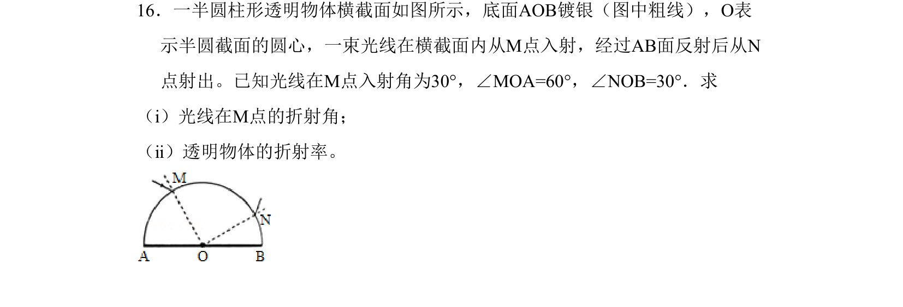
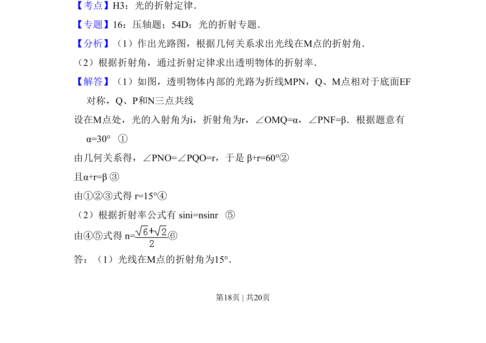
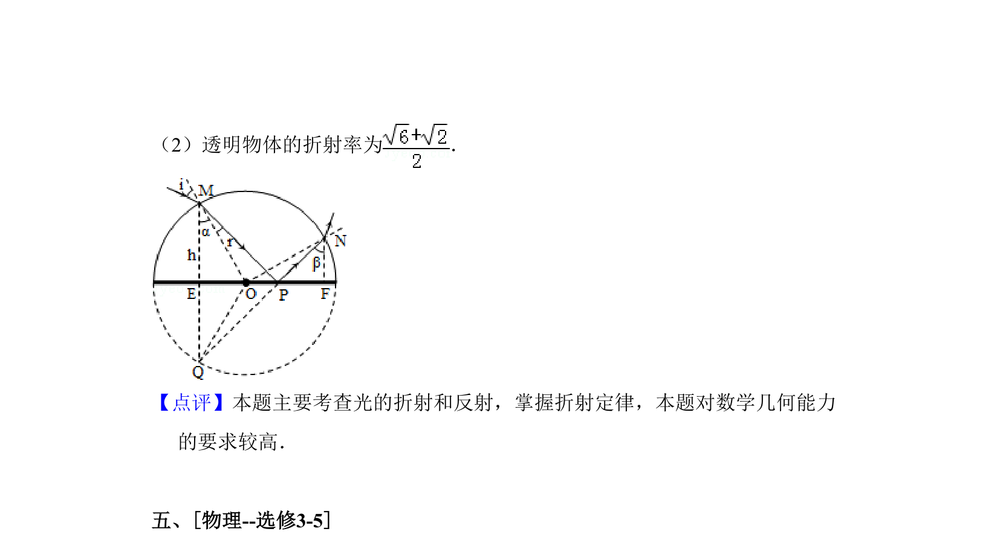

考点：光的折射定律 几何光学 折射率

考查光的折射定律，通过几何关系求折射角并计算透明物体的折射率。


📄 原 PDF 第 18 页：
素材/真题/吉林/2008-2024·（吉林）物理高考真题/2011年高考物理试卷（新课标）（解析卷）.pdf
16．一半圆柱形透明物体横截面如图所示，底面AOB镀银（图中粗线），O表 示半圆截面的圆心，一束光线在横截面内从M点入射，经过AB面反射后从N 点射出。已知光线在M点入射角为30°，∠MOA=60°，∠NOB=30°．求 （ⅰ）光线在M点的折射角； （ⅱ）透明物体的折射率。
【考点】H3：光的折射定律．菁优网版权所有 【专题】16：压轴题；54D：光的折射专题． 【分析】（1）作出光路图，根据几何关系求出光线在M点的折射角． （2）根据折射角，通过折射定律求出透明物体的折射率． 【解答】（1）如图，透明物体内部的光路为折线MPN，Q、M点相对于底面EF 对称，Q、P和N三点共线 设在M点处，光的入射角为i，折射角为r，∠OMQ=α，∠PNF=β．根据题意有 α=30° ① 由几何关系得，∠PNO=∠PQO=r，于是 β+r=60°② 且α+r=β ③ 由①②③式得 r=15°④ （2）根据折射率公式有 sini=nsinr ⑤ 由④⑤式得 n=⑥ 答：（1）光线在M点的折射角为15°．